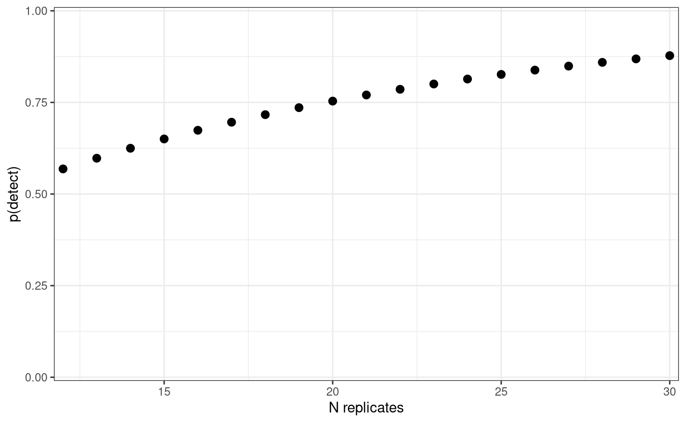
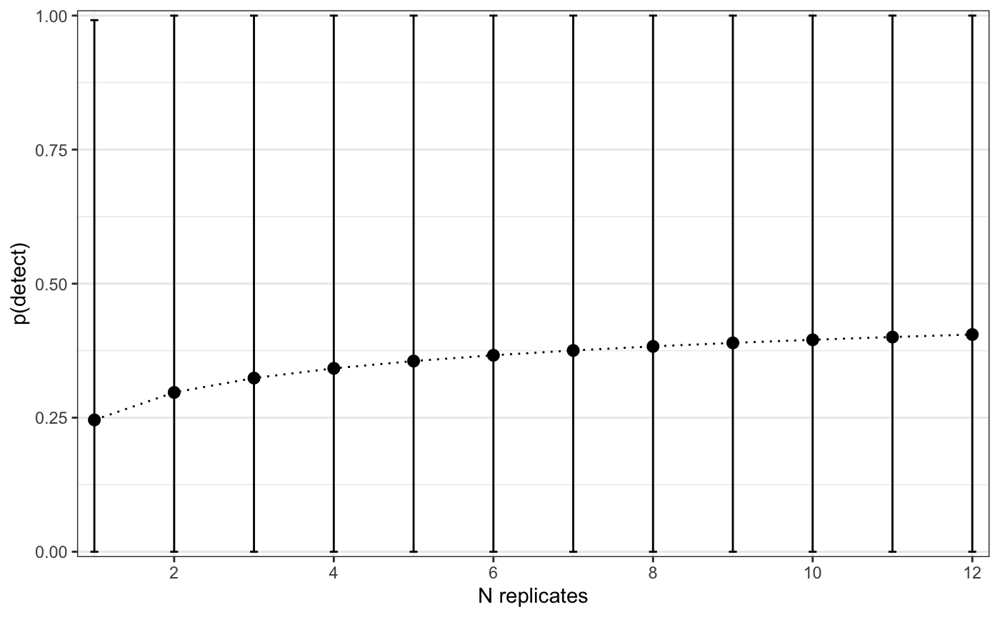

artemis-overview.RmdThe artemis R package was created to aid in the design and analysis of environmental DNA (eDNA) survey studies by offering a custom suite of models for quantitative polymerase chain reaction (qPCR) data from extracted eDNA samples. Data from eDNA sampling surveys is often analyzed with occupancy models or GLMS, but there are several characteristics of qPCR data in particular which made us feel that it would benefit from a different modeling approach. Specifically, our approach to this data makes use of Bayesian truncated latent variable models written in Stan.
artemis
In eDNA samples that are extracted and run through qPCR analysis, the concentration of eDNA is not directly measured. Instead, the amount of eDNA present is represented as a function of the number of quantification cycles of qPCR (hereafter referred to as the “Cq” value) completed before amplification takes place. eDNA concentration (\([eDNA]\)) is then related to Cq via a standard curve generated in the lab for the target species. This standard curve formula typically takes the form: \[Cq = log[eDNA] * \beta + \alpha\] The standard curve is specific to the lab reagents and techniques used. The implication of this is that models using Cq values (or a derived value such as a “positive” detection) as the response result in estimates of effect sizes which cannot be directly compared between different studies using different standard curves.
A higher Cq value corresponds to a lower concentration of eDNA in a sample. Above a pre-determined threshold, additional quantification cycles are not attempted. Therefore, “non-detection” is taken to be any sample which requires more than the threshold number of cycles to detect. Failing to account for this data truncation process can result in increased uncertainty and bias in our estimates of the effect sizes.
The potential sources of measurement error in the extraction and qPCR processes are difficult to separate and quantify. For example, Cq values produced by qPCR become more variable at the threshold of detection, i.e. as the number of eDNA molecules available for amplification approaches zero. This source of variability in the response is different from that produced by error introduced in the pipetting process, but they have the same effect on Cq (namely, increasing variability).
The artemis package addresses these issues by directly modeling the effect of the predictors on the latent (unobserved) variable, eDNA concentration. It does this by linking eDNA concentration to the observed response via the parameters of an associated standard curve. The general model is as follows:
\[ Cq_i \sim Normal(\hat{Cq_i}, \sigma_{Cq}) \\ \hat{Cq_i} = \alpha_{std\_curve} + \beta_{std\_curve}* log[eDNA]_i \\ log[eDNA]_{i} = X_{i} \beta\]
where \(\beta\) is a vector of effects on \(log[eDNA]\), \(X\) is the model matrix of predictors and \(\alpha_{std\_curve}\) and \(\beta_{std\_curve}\) are fixed values provided by the standard curve.
As detection limits vary with genetic assay, the upper threshold on Cq in the model is adjustable. Any values of \(\hat{Cq_i}\) which are greater than the upper limit on \(Cq_i\) are recorded as the threshold value. For example, a \(\hat{Cq_i}\) value of 42 is recorded as 40 when the upper limit is 40 cycles.
This model formulation makes several assumptions:
\(log[eDNA]\) is assumed to be uniform within a sample.
\(log[eDNA]\) is sampled without error.
All measurement error is introduced in the extraction/qPCR stage. Field sampling is assumed to take place without error.*
There are no false detections, i.e. the measurement error cannot result in a positive detection when eDNA is not present in the sample.
*Future versions of the artemis package might allow for measurement error in both the field collection and qPCR stages.
Importantly, this formulation produces estimates of the effect sizes which:
are modeled directly on \(log[eDNA]\) rather than Cq, therefore are independent of the standard curve and can be compared between studies.
account for the data truncation at the upper limit of qPCR cycles, which reduces uncertainty and bias in the estimates.
directly model the measurement error on qPCR extraction, allowing quantification of the amount of uncertainty attributable to uncertainty in the effect sizes vs. lab procedure.
In artemis, the model is specified using a model formula, similar to the lm() or lmer() functions. This model formula is used to construct the model on \(log[eDNA]\).
The functions in artemis generalize to any eDNA survey data containing Cq values associated with a standard curve for the target species.
artemis
The artemis installation guide can be found here.
Since artemis was originally written to analyze aquatic eDNA samples, the examples and sample data included in the package (see ?eDNA_data) reference variables that are specific to aquatic eDNA survey data. These variables include volume (the the number of mililiters of water that went through the filter in each sample) and distance (the distance in meters from the source of eDNA). For example, eDNA_data is from a “live car” experiment, where eDNA was sampled at known distances from a source of eDNA (fish in a net pen in unidirectional flow).
In the following examples, tech_rep refers to qPCR replicates generated from a single extracted sample or filter; rep refers to a single extracted filter or sample.
artemis FunctionalityThe functions included in artemis can be grouped into a few categories; each category is either introduced in this vignette, or addressed in detail by its own vignette. Available vignettes are linked to individually below:
These categories are addressed in the sections that follow.
The artemis package also includes methods for R’s plot(), summary(), data.frame(), and predict() functions.
Often purpose of an eDNA sampling study is to inform a field sampling protocol. For these cases, we often want to know how likely we are to detect eDNA, given the way that we sampled. est_p_detect() returns the probability of getting a detection across all planned samples and replicates, where n_rep represents the product of the number of filters and technical replicates for each filter. For example, if you planned to take 2-5 filters at each variable level and then complete 6 extractions for each filter, that would be n_rep = 12:30.
p_detect = est_p_detect(variable_levels = c(Intercept = 1, Distance = 100), betas = c(Intercept = -10.5, Distance = -0.03), Cq_sd = 1, std_curve_alpha = 21.2, std_curve_beta = -1.5, n_rep = 12:30) p_detect #> Variable levels: #> Intercept Distance #> 1 100 #> #> n_reps p_detect #> 1 12 0.6000732 #> 2 13 0.6294795 #> 3 14 0.6567236 #> 4 15 0.6819645 #> 5 16 0.7053494 #> 6 17 0.7270148 #> 7 18 0.7470872 #> 8 19 0.7656837 #> 9 20 0.7829128 #> 10 21 0.7988751 #> 11 22 0.8136637 #> 12 23 0.8273648 #> 13 24 0.8400586 #> 14 25 0.8518189 #> 15 26 0.8627146 #> 16 27 0.8728091 #> 17 28 0.8821613 #> 18 29 0.8908259 #> 19 30 0.8988534
We can also plot this,
plot(p_detect) #> Warning: `expand_scale()` is deprecated; use `expansion()` instead. #> Warning: `expand_scale()` is deprecated; use `expansion()` instead.

Alternatively, we can also use a fit model to estimate the p(detect) for a set of circumstances. Unlike the above, using a fit model allows us to estimate the probability of detection with the uncertainty in our effect size estimates taken into account.
model_fit = eDNA_lm(Cq ~ Distance + Volume + Distance*Volume, data = eDNA_data, std_curve_alpha = 21.2, std_curve_beta = -1.5, iter = 500, seed = 1234, n_chain = 1) # set to 1 for vignette; default is 4 #> Model executable is up to date! #> Running MCMC with 1 chain(s) on 1 core(s)... #> #> Running ./eDNA_omni 'id=1' random 'seed=1234' data \ #> 'file=/var/folders/tt/y4p3sd8x1d90ztlbsyjthmfc0000gn/T/RtmpBvz3Vz/standata-20c926dfc095.json' \ #> output \ #> 'file=/var/folders/tt/y4p3sd8x1d90ztlbsyjthmfc0000gn/T/RtmpBvz3Vz/eDNA_omni-202006231120-1-dc8a23.csv' \ #> 'method=sample' 'save_warmup=0' 'algorithm=hmc' 'engine=nuts' adapt \ #> 'engaged=1' #> Chain 1 Rejecting initial value: #> Chain 1 Gradient evaluated at the initial value is not finite. #> Chain 1 Stan can't start sampling from this initial value. #> Chain 1 Gradient evaluation took 0.000137 seconds #> Chain 1 1000 transitions using 10 leapfrog steps per transition would take 1.37 seconds. #> Chain 1 Adjust your expectations accordingly! #> Chain 1 Iteration: 1 / 2000 [ 0%] (Warmup) #> Chain 1 Informational Message: The current Metropolis proposal is about to be rejected because of the following issue: #> Chain 1 Exception: normal_lpdf: Scale parameter[1] is 0, but must be > 0! (in '/var/folders/tt/y4p3sd8x1d90ztlbsyjthmfc0000gn/T/RtmpievvJ0/model-20501811b54e.stan', line 231, column 1 to line 234, column 40) #> Chain 1 If this warning occurs sporadically, such as for highly constrained variable types like covariance matrices, then the sampler is fine, #> Chain 1 but if this warning occurs often then your model may be either severely ill-conditioned or misspecified. #> Chain 1 #> Chain 1 Iteration: 100 / 2000 [ 5%] (Warmup) #> Chain 1 Iteration: 200 / 2000 [ 10%] (Warmup) #> Chain 1 Iteration: 300 / 2000 [ 15%] (Warmup) #> Chain 1 Iteration: 400 / 2000 [ 20%] (Warmup) #> Chain 1 Iteration: 500 / 2000 [ 25%] (Warmup) #> Chain 1 Iteration: 600 / 2000 [ 30%] (Warmup) #> Chain 1 Iteration: 700 / 2000 [ 35%] (Warmup) #> Chain 1 Iteration: 800 / 2000 [ 40%] (Warmup) #> Chain 1 Iteration: 900 / 2000 [ 45%] (Warmup) #> Chain 1 Iteration: 1000 / 2000 [ 50%] (Warmup) #> Chain 1 Iteration: 1001 / 2000 [ 50%] (Sampling) #> Chain 1 Iteration: 1100 / 2000 [ 55%] (Sampling) #> Chain 1 Iteration: 1200 / 2000 [ 60%] (Sampling) #> Chain 1 Iteration: 1300 / 2000 [ 65%] (Sampling) #> Chain 1 Iteration: 1400 / 2000 [ 70%] (Sampling) #> Chain 1 Iteration: 1500 / 2000 [ 75%] (Sampling) #> Chain 1 Iteration: 1600 / 2000 [ 80%] (Sampling) #> Chain 1 Iteration: 1700 / 2000 [ 85%] (Sampling) #> Chain 1 Iteration: 1800 / 2000 [ 90%] (Sampling) #> Chain 1 Iteration: 1900 / 2000 [ 95%] (Sampling) #> Chain 1 Iteration: 2000 / 2000 [100%] (Sampling) #> Chain 1 finished in 44.5 seconds. #> 309 of 1000 (31.0%) transitions ended with a divergence. #> These divergent transitions indicate that HMC is not fully able to explore the posterior distribution. #> Try increasing adapt delta closer to 1. #> If this doesn't remove all divergences, try to reparameterize the model. # Intercept is automatically supplied if in model_fit p_detect2 = est_p_detect(variable_levels = c(Distance = 100, Volume = 50, DistanceXVolume = 100*50 ), model_fit = model_fit, n_rep = 1:12) print(p_detect2) #> Variable levels: #> Distance Volume DistanceXVolume #> 100 50 5000 #> #> n_rep mean 2.5% 50% 97.5% #> 1 1 0.2458648 0 0.004969612 0.9915189 #> 2 2 0.2971402 0 0.009914527 0.9999281 #> 3 3 0.3239257 0 0.014834868 0.9999994 #> 4 4 0.3420400 0 0.019730755 1.0000000 #> 5 5 0.3556387 0 0.024602312 1.0000000 #> 6 6 0.3664548 0 0.029449659 1.0000000 #> 7 7 0.3753904 0 0.034272916 1.0000000 #> 8 8 0.3829758 0 0.039072203 1.0000000 #> 9 9 0.3895484 0 0.043847639 1.0000000 #> 10 10 0.3953348 0 0.048599343 1.0000000 #> 11 11 0.4004940 0 0.053327432 1.0000000 #> 12 12 0.4051414 0 0.058032024 1.0000000
and we can plot the results,
plot(p_detect2, error_width = 0.1) #> Warning: `expand_scale()` is deprecated; use `expansion()` instead. #> Warning: `expand_scale()` is deprecated; use `expansion()` instead.

Notice how we get uncertainty intervals when we use a fit model.
est_power_*() functionsSimulations are helpful for designing new studies. Given a set of assumptions about the effect sizes, we can simulate a full study and evaluate how well we are able to detect eDNA, and/or or whether the proposed design allows us to estimate those effects with precision.
For example, suppose we wanted to design a study exploring the effects of different distances on the detection of eDNA. From previous studies, we have estimated the effect of distance to be a -0.04 decrease in log[eDNA] per meter distance away from source. If we want to have a sense of how many replicates we need for this study to have at least 80% power (>=80% chance of estimating a beta for distance without including 0 in its CI), we can do this using the est_power_lm() and specifying a design. To do this, we specify the number of replicate filters as a vector (rep) in the variable_list, along with the rest of our variables and argument values. Note that these functions are not yet parallelized and may take some time to run on your machine
est_power_lm(Cq ~ 1 + distance, variable_list = list(Cq = 1, distance = c(0,100,300), rep = 1:3), betas = c(intercept = -10.6, distance = -0.04), sigma_Cq = 1, std_curve_alpha = 21.2, std_curve_beta = -1.5, type = "exclude_zero") #> (Intercept) distance #> 1 0
The distance result indicates that we don’t have a sufficient number of replicates to detect the effect of distance here. We could keep trying different number of replicates until we get a power number we like. However, it is easier to use the functionest_power_range_lm(), which will automate this process for us. The call is similar to the one above, but instead of specifying the number of replicates in the variable_list, we provide a rep_range, which is seq(2,20,2) (every 2 from 2 to 20) by default. It will stop running once the specified power level is reached. Warning, this is quite CPU intensive, so for this demonstation, we will be lowering the rep_range and the number of iterations for each case:
set.seed(1234) dist_power_range = est_power_range_lm(Cq ~ 1 + distance, variable_list = list(Cq = 1, distance = c(0,100,300)), betas = c(intercept = -10.6, distance = -0.04), sigma_Cq = 1, std_curve_alpha = 21.2, std_curve_beta = -1.5, type = "exclude_zero", rep_range = c(5,10)) dist_power_range #> $`n_rep: 5` #> (Intercept) distance #> 1 0 #> #> $`n_rep: 10` #> (Intercept) distance #> 1 1
For this study, it looks like we will need greater than 5 replicates (but perhaps less than 10) to have our desired 80% power.
—